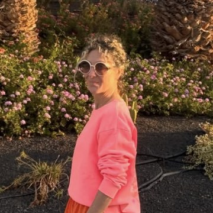

Elodie Limouzin
Rédactrice à Meilleurs. Beaux hôtels, villes animées, grands espaces, et l'image comme second métier.

Elodie Limouzin est rédactrice de Meilleurs. Elle vient de l'hôtellerie et du voyage, où elle a couvert les belles maisons, les villes animées et les grands espaces, et où elle a pris l'habitude d'aller interroger les chefs plutôt que de commenter leurs cartes de loin.
L'image est chez elle un second métier : cadrage, lumière, mise en scène d'une assiette ou d'une salle. C'est une compétence utile à un média qui s'interdit d'illustrer une maison avec une photo de banque d'images, et qui devra donc photographier lui-même les tables qu'il visite.
Le média ne publie pas de biographie qu'il n'a pas recueillie. Le parcours détaillé et les sujets de prédilection seront ajoutés lorsque l'intéressée les aura elle-même rédigés, et le portrait remplacé par une photographie fournie par ses soins.
Ce qu'elle signe
- Meilleur ramen à Paris : 8 adresses en 2026, 31 août 2026.
- Les 8 meilleures tables de Strasbourg en 2026, 31 août 2026.
- Les 25 meilleurs restaurants de Paris en 2026, 31 août 2026.
Aucune parution ne lui est attribuée à ce jour. Ses articles seront listés ici au fil des publications.
La contacter
Une erreur à signaler dans un article signé Elodie, un droit de réponse, une proposition de sujet : tout passe par le formulaire de contact, que la rédaction lit elle-même. Réponse sous 48 h ouvrées.
Profil professionnel : LinkedIn. La méthode de notation est décrite sur la page Notre méthode.